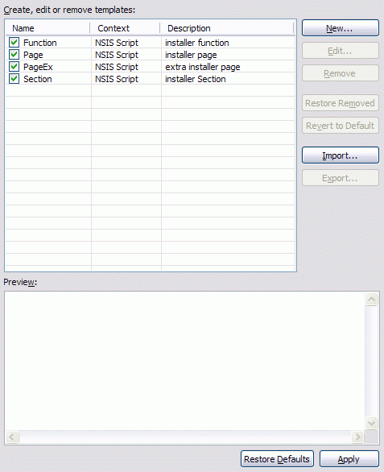
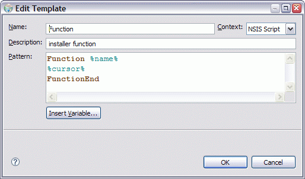

Templates
The Templates preference page is used to work with code templates. A template is a convenience for the programmer to quickly insert often reoccurring source code patterns. There are three types of templates:- Built-in: Templates which are prepackaged along with the plugin.
- Custom: Built-in templates which have been modified by the user.
- User-defined: Templates
which have been created by the user.

- Templates
- Displays the list of templates. Only checked templates are enabled for use. To disable/enable a template uncheck/check the checkbox associated with it The following buttons allow manipulation and configuration of templates. ← Back
- New
- Opens a dialog to create a new template. ← Back
- Edit
- Opens a dialog to edit the currently selected template. ← Back
- Remove
- Remove all selected templates. ← Back
- Restore removed
- Restore any custom templates removed during the current preferences editing session as long as the preferences have not yet been saved using the Apply or OK buttons.. ← Back
- Revert to default
- Revert all selected custom templates back to their original built-in states. ← Back
- Import
- Imports templates from the file system. ← Back
- Export
- Exports all selected templates to the file system. ← Back
- Preview
- Preview the pattern of the selected template. ← Back
Template Editor
The Templates Editor dialog is used to create new and edit existing code templates.
- Name
- The name of the template. ← Back
- Context
- The context determines where the template can be used and the set of available pre-defined template variables. EclipseNSIS provides only one context- NSIS Script. ← Back
- Description
- A description of the template, which is displayed to the user when choosing the template. ← Back
- Pattern
- The template pattern. The pattern editor is syntax highlighting and provides code completion assistance (press Ctrl-Space). A pattern consists of source code with replaceable variables. The format of a replaceable variable is %name% where "name" is a variable name. ← Back
- Insert Variable
- Displays a list of pre-defined context specific variables. The following pre-defined variables are available: ← Back
- %cursor%
- Specifies the cursor position when the template edit mode is left. This is useful when the cursor should jump to another place than to the end of the template on leaving template edit mode.
- %date%
- Evaluates to the current date.
- %percent%
- Evaluates to the percent symbol '%'. Alternatively, two percents can be used: '%%'.
- %time%
- Evaluates to the current time.
- %year%
- Evaluates to the current year.
- %user%
- Evaluates to the user name.
- %line_selection%
- Evaluates to the selected line in the editor.
- %word_selection%
- Evaluates to the selected word in the editor.
- %register%
- Evaluates to an NSIS register, e.g., $0, $ R0, etc.
- %pathconst%
- Evaluates to an NSIS path constant, e.g., $PROGRAMFILES, $DESKTOP, etc..
- %pathvar%
- Evaluates to an NSIS path variable, e.g., $INSTDIR, $OUTDIR, etc.
- %predefine%
- Evaluates to an NSIS predefine, e.g., ${__FILE__}, ${__LINE__}, etc.
- %pagetype%
- Evaluates to an NSIS installer page type, e.g., instfiles, license, etc.
Previous | Contents | Next
Copyright © 2004, 2005 Sunil Kamath (IcemanK).